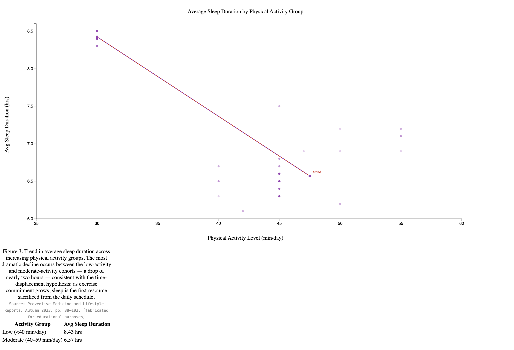
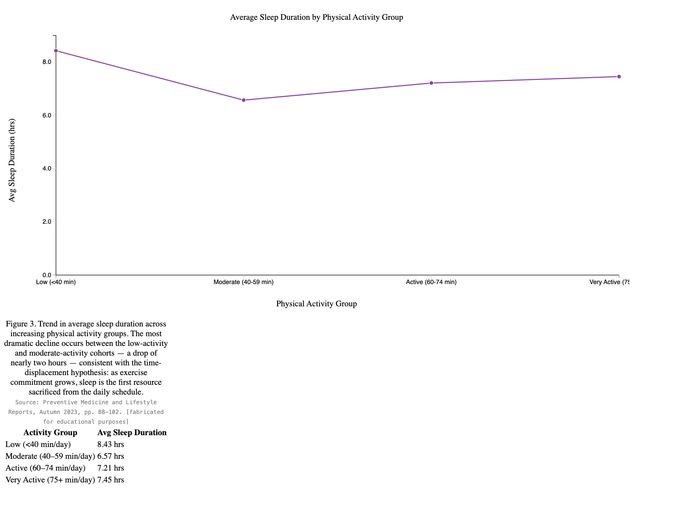
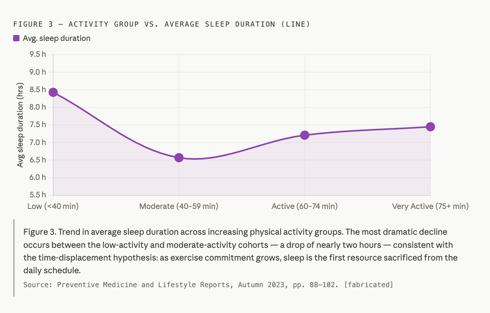

About the project
For decades, the health and wellness industry has been trying to convince us that the more you move, the healthier you are and the better you sleep. Fitness influencers, wellness businesses, and even clinical guidelines have screamed this message so consistently that it has become near-impossible to miss. But a closer look at sleep health data across 332 working adults tells a different story.
The data reveals a pattern that challenges everything we thought we knew about exercise and rest. Participants reporting the lowest physical activity levels — fewer than 40 minutes of moderate movement per day — averaged an impressive 8.43 hours of sleep per night. Meanwhile, those in the highest activity range, reporting 75 or more minutes of daily exercise, averaged just 7.45 hours. That is nearly a full hour of lost sleep every single night. Summed up across weeks, months, and years into a chronic sleep deficit that no protein shake or recovery foam roller is going to fix.
The explanation is not complicated once you think about where time actually comes from. For most working adults, those 75-plus minutes of daily exercise are taken directly out of the hours that would otherwise be spent simply sleeping. Early morning runs mean 5 AM alarms. Evening gym sessions push dinner and bedtime progressively later. The calendar does not expand to accommodate an active lifestyle; sleep contracts instead.
But the time cost is only half of the problem. Exercise, particularly high effort or prolonged activity, triggers a measurable physiological stress response. Cortisol and adrenaline levels rise during intense movement and do not return to baseline the moment you step out of the gym. Core body temperature remains elevated for hours post-workout, and the central nervous system stays in a fight mode long after the activity ends. For many people, this translates directly into difficulty falling asleep, lying awake with a racing heart.
The sedentary participants in this dataset, by contrast, experience none of these physiological barriers to sleep. Their cortisol curves follow a natural, undisturbed decline. Their bodies are ready to sleep when their schedules say it's the end of the day.
In this article, we are going to share the data visualization techniques to convince you about our findings.
Visualizations



Real-World Analysis
The real-world misleading chart used in this project is the PS3 vs Xbox 360 console popularity chart, sourced from a data visualization ethics presentation (SlidePlayer.com, slide 9738183, https://slideplayer.com/slide/9738183/). The original chart displays popularity percentages (PS3 at 49% and Xbox 360 at 46%) using a Y-axis that starts at 44.5% rather than 0%. This makes a 3-percentage-point difference look much bigger and creates the visual impression that PS3 is nearly three times more popular than Xbox 360. The actual difference would be considered a statistical tie. The ethical chart corrects this by starting the Y-axis at 0 and extending it to 100%, which is the full meaningful range for a percentage variable. At this scale, the 3-point gap between the two consoles is accurately visible as a minor difference.